Generated when there is movement of electrical ions throughout the heart – ECG represents the ‘average’ direction of these electrical impulses.
Two (2) ECG electrodes are used to gather a vector by comparing the action potential - Impulse is either positive (impulse to positive) or negative (impulse to negative)
- Positive/Exploring Lead (mostly the one looking at the heart)
- Negative/Reference Lead
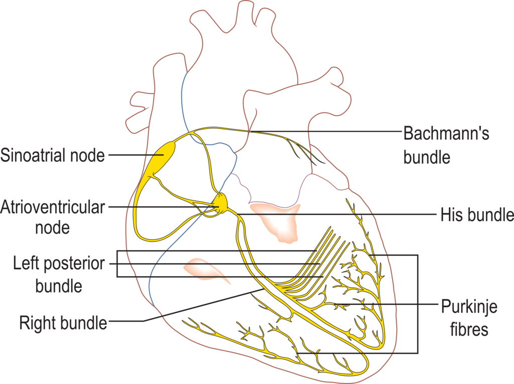
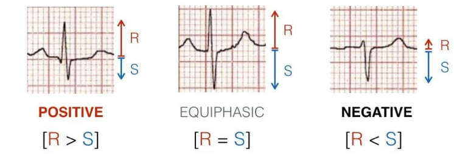
From Atrial depolarisation (start in SA node) spreading from right to left atrium.
- V1 can detect initial positive then small negative deflection (P-wave)
- V5 shows vector leading towards it (purple line) hence showing positive (P-Wave)
Septum receives PKF from left bundle branch and depolarises from left to right side – The vector is directed forward the right
- V1 has small positive wave (R-wave) due to small septum
- V5 show small negative wave (Q-wave) – Same vector size as V1
Vector from ventricular wall is directed to left then downwards; vector from the right is override by larger vectors from left ventricles and therefore, these vectors originate from there. The
- V1 displays large negative (S-wave)
- V5 displays large positive (R-wave)
Activation from basal parts of ventricles which is directed backwards and upwards (away from V5)
- V1 does not detect this vector
- V5 detects a small negative wave (S-Wave)
T-Wave is rapid repolarisation (Phase 2), therefore should be in-line with QRS complex (same direction as net QRS direction)
- Net negative QRS = Negative T-wave
- Net positive QRS = Positive T-wave
- Travels opposite direction = Discordant T-wave
Children (till around puberty) may have T-wave vector from left & backwards creating negative T-waves from V1 to V4 (right side of chest).
- V1 negative T-wave is common along with negative QRS complex.
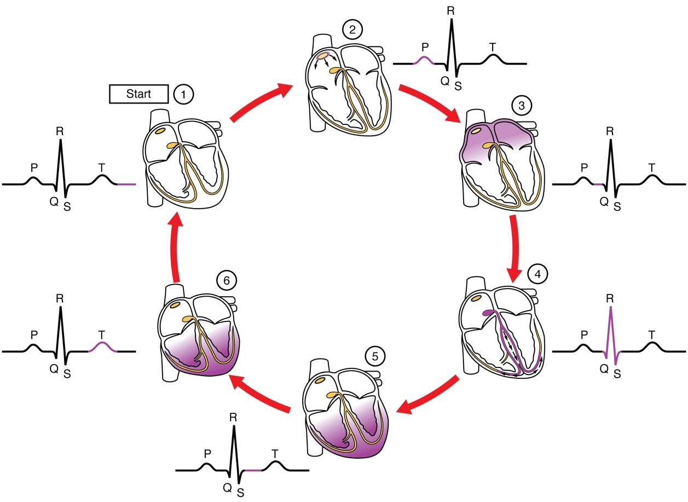
1st positive (upward) reflecting on atrial depolarisation; has one wave per QRS – Smooth wave due to low frequency impulses as atria as smaller muscle mass.
- Abnormal P-waves indicate impulse has travelled abnormally via atrial pathways (not SA node)
- P-wave with notches indicate left or right (or both) atria abnormality (usually atria dilation)
- V1 & V2 may show end portion of P-wave slightly negative
- Small & rounded
- Amplitude 0.5mm – 2.5mm
- Duration of < 0.10s
- Before QRS complex
- Positive in Lead II for sinus rhythm
- Positive: aVL + aVF + -aVR + Lead I + V4 – V6
- Negative: -aVR
Distance between P-wave and QRS onset as result of AV conduction from atria to ventricle; PR is longer in elderly and short PR indicates fast heart rate.
- PR segment is from end of P-wave to start of QRS complex; denotes AV node conduction delay
- Normal limits indicate impulse has travelled through atrial pathways in a timely manner
- PR interval is longer when AV conduction is poor or blocked
- Shorter PR interval suggest pre-exciting of the impulse; usually by accessory pathways.
- 0.12 – 0.20s
Ventricular depolarisation made up of 3 waves; the larger wave reflects on larger muscle mass in the ventricles than atria. QRS waves longer/broad (> 0.10s) suggest slow ventricular contractions.
- 1st downward deflection after PR interval is ‘Q-wave’
- 1st deflection after PR interval is ‘R-wave’
- 2nd downward deflection is called the ‘S-wave’
- QRS comes in many configurations:
- o Large waves use capital letters (Q, R, S)
- o Smaller waves use lower-case (q, r, s)
- 0.08 – 0.10s
Brief resting state after ventricular contraction – usually flat and isoelectric. Abnormalities results in depression or elevation as result of cardiac emergencies or conditions.
- Baseline of ST segment acting as a junction between QRS & ST segment
- Medical conditions can cause J-point does not meet with isoelectric lines.
- Any elevation / depressions > 1mm
Ventricular repolarisation – smooth waves that end when isoelectric; can be inverted, peaked or flat based on medical conditions such as drug toxicity. V1 & V3 has highest amplitude
- Tachycardia has T-wave often and no P-wave potentially as it represents ventricles (dominant)
- U-wave may be present (2nd hump before P-wave); indicate PKF recovery (show in bradycardia)
- Small U-wave show ventricle repolarisation whilst larger waves show electrolyte / drug conditions
- Peak / Flat / Peak structure
- Rounded & slightly asymmetric
- Positive in Lead II
- Amplitude < 5mm
- Duration 0.10 – 0.25s (or higher)
- Positive: Lead I, II + -aVR + V5 – V9
- Negative: aVR
- Lead III + aVL can show isolated T-wave inversion
- aVF positive but flat
- V1 invert or flat waves common & women
Time between beginning of ventricular depolarisation to end of ventricular repolarisation (ventricular activity duration) from start of QRS to end of T-wave. Bazzett’s formula shows inverted relationship of QT duration & HR as ‘QTc'.
- Long QT interval suggest long repolarisation; can cause lethal arrythmias
- Duration 0.35 – 0.43s
External or internal causes which leads to poor ECG readings that produces excessive waves or frequency.
- Check loose leads or dried electrodes
- Ensure adequate skin preparation by cleaning, shaving &/or drying
- Ensure ECG set to 0.05 – 40Hz for good diagnostic quality or 0.05 – 150Hz (Corpuls)
- Advise patient to remain as relaxed and still as possible
- Usually in sweaty/wet or hairy patients – requires proper skin preparation by shaving &/or drying skin accordingly.
- Slow undulating baseline on ECG caused by patient or ambulance movement including breathing resulting in an ECG that drifts off.
- Motion caused by shivering, tremors – Attempt to warm/support the patient, make them comfortable, provide pain relief etc.
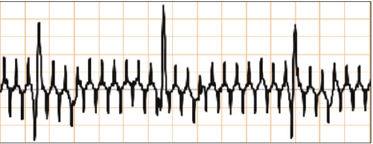
- Resulting from power interference hence ECG should be set to standard frequency or 0.05 – 40Hz in event of 60Hz pickups.
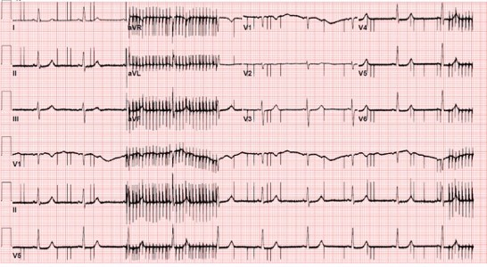
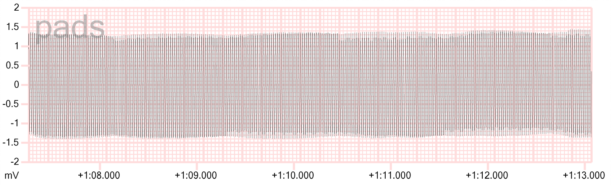
This is electromagnetic interference, usually from a nearby AC power source. The spikes are appearing 50 times per second, or 50 Hertz (Hz), which is the frequency at which our AC power network delivers 220-240 volts countrywide. Some known sources of this interference are:
- Electric air-beds (as commonly found in care facilities and hospitals)
- Pool pumps
- Electric blankets
- Poorly insulated electrical appliances
- High-voltage overhead wires
- Hair dryers
- AC-DC adapters (e.g. laptops, etc.)
There are a few easy workarounds (and one hard one) to mitigate this reading if you ever come across it on scene;
- Move the patient to another location
- Shut-off the source of the interference (it may take some time to find it, unless you switch off mains power!).
- Replace the electrodes (dried out electrodes increase the susceptibility to outside interference)
Fun fact; if your patient’s heart was beating to the rhythm presented here, it would sound like this (this is a 50 Hz square waveform, which is the most audible waveform at this frequency).:
- Implantable devices controlling many bodily functions and has a frequency – Can be turned off by a physician with a key.
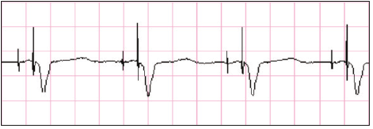
- Associated with Transcutaneous Pacing (TCP) causes pseudo-QRS complex after pacing spike. Example B
- Placement on the left-side in most cases.
| Proper 12-lead placement for left side of chest | |
|---|---|
| V1 | 4th intercostal space, right of sternum |
| V2 | 4th intercostal space, left of sternum |
| V3 | In between V2 and V4 |
| V4 | 5th intercostal space, left midclavicular line |
| V5 | In between V4 and V6 |
| V6 | 5th intercostal space, mid-axillary line (directly under the midpoint of the armpit) |
| V4R | 5th intercostal space, right mid-clavicular line |
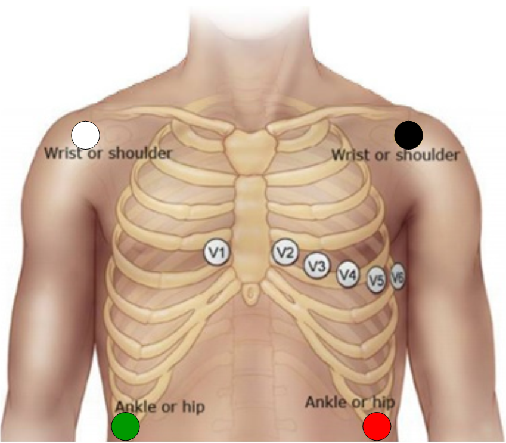
- Provides a view of the right ventricular walls which may be blocked indicated if;
- ST Elevation in Lead II & III, and aVF
- ST Elevation in V1
- V2 ST Elevation is 50% greater than ST depression magnitude in aVF
- Use in cases of dextrocardia
| Proper 12-lead placement for right side of chest | |
|---|---|
| V1 | 4th intercostal space, left of sternum |
| V2 | 4th intercostal space, right of sternum |
| V3R | In between V2 and V4 |
| V4R | 5th intercostal space, right midclavicular line |
| V5R | In between V4 and V6 |
| V6R | 5th intercostal space, mid-axillary line (directly under the midpoint of the armpit) |
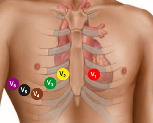
- Use V1 & V2 to look for opposite myocardial infarction changes that is reflected from posterior surface of the heart.
The 12-lead ECG displays 12 views of the electrical activity of the heart produced by 10 electrodes in specific positions.
- These ECG analyse the same electrical events at a given time, however from different angles
- Many views are needed for complete assessment and/or to confirm findings.
The leads are positioned in certain angles to detect an electrical activity (vector).
- The chest leads provide axial (horizontal / transverse) view of heart
- Show anterior (front) and posterior (back) view
- The exploring leads is located anteriorly and reference inside chest
- The limb leads show the coronal (frontal) view of the heart
- o Show superior (upper) and inferior (lower) view
Like a camera looking into the heart, the view is generated from positive (electrode) to negative (centre of heart) – Due to the position of the left ventricles lying anteriorly, the right ventricle and posterior of left ventricles cannot be seen.
| V1 – V2 | Septal Leads |
|---|---|
| V3 – V4 | Anterior Leads |
| V5 – V6 | Lateral Leads |
Electrodes from limbs provide many views of the heart – Looking from positive to negative – Legs are neutral (act as the ‘earth’).
- Augmented leads (aVR, aVF, & aVL) views heart further away than other leads
- Augmented leads are smaller due to distance
Einthoven’s triangle displays the electrical relationship (polarity) of the limb leads and how they produce these views.
- aVR is a lead that can be converted to -aVR (switching view positions) – Converted on ECG device
- Assists with more accurate inferior & lateral diagnosis of ischemia / infarction
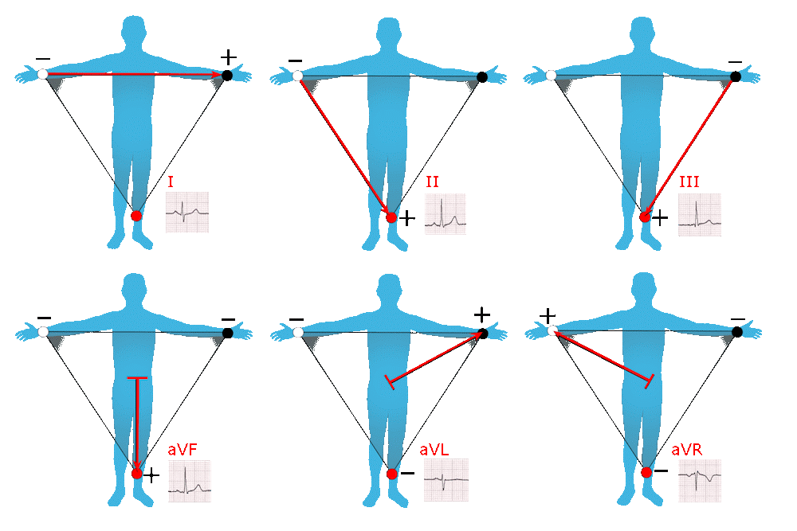
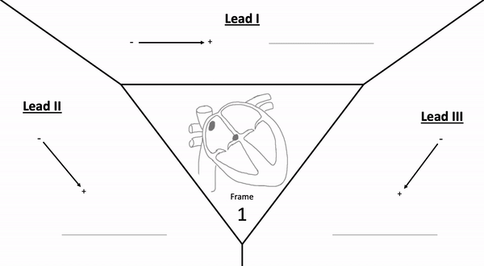
| Leads | Lead Type | View of Heart | Vessel/s & Feature/s Seen |
|---|---|---|---|
| I | Lateral (side) | Lateral wall of left ventricle | Left Cx Artery |
| II | Inferior (bottom) | Inferior Walls of Left Ventricles | 90% RCA &/or 10% Cx Artery |
| III | Inferior (bottom) | Inferior Walls of Left Ventricles | 90% RCA &/or 10% Cx Artery |
| aVF | Inferior (bottom) | Inferior Walls of Left Ventricles | 90% RCA &/or 10% Cx Artery |
| aVL | Lateral (side) | Lateral wall of left ventricle | Left Cx Artery |
| aVR | Lateral | Basal part of Septum | Right Ventricular outflow tract |
| V1 | Septal (front) | Ventricular Septum (interventricular) | Proximal LAD Artery |
| V2 | Septal (front) | Ventricular Septum (interventricular) | Proximal LAD Artery |
| V3 | Anterior (front) | Left Ventricle Anterior Walls | LAD Artery |
| V4 | Anterior (front) | Left Ventricle Anterior Walls | LAD Artery |
| V5 | Lateral (side) | Lateral wall of left ventricles | Left Cx Artery &/or Distal LAD &/or RCA |
| V6 | Lateral (side) | Lateral wall of left ventricles | Cx Artery &/or Diagonal of LAD |
| V7* | Posterolateral | Left Ventricle Posterior / Inferobasal | Left Cx &/or RCA |
| V8* | Posterolateral | Left Ventricle Posterior / Inferobasal | Left Cx &/or RCA |
| V9* | Posterolateral | Left Ventricle Posterior / Inferobasal | Left Cx &/or RCA |
* ECG electrodes must be modified
Visualisation of the Heart and the corresponding ECG (Cabrera System)
The left side of the ECG strip displays bipolar limb leads (Lead I, II, & III) and augmented unipolar limb leads (aVR, aVL, & aVF) whereas the right side of the strip displays unipolar chest leads (V1 – V6).
- A rhythm strip may produce bottom of ECG strip (usually Lead II) for rhythm analysis.
- Cabrera System is used as a standardise layout of the ECG showing systematic view of the heart
- We mainly use the 25mm/s paper on the 12-lead ECG paper.
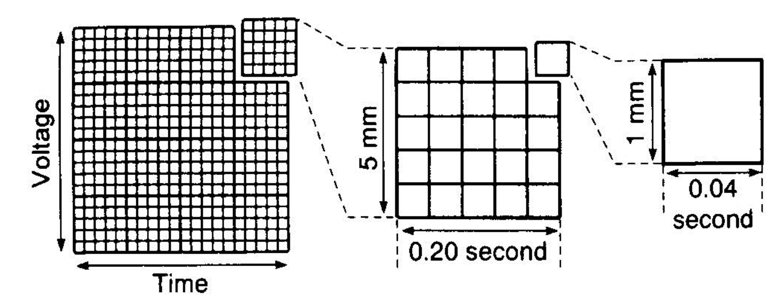
| Every Large Box | Every Small Box | |
|---|---|---|
| Description | Shown by heavy lines – Contain five (5) small boxes. | Shown by thin lines |
| Time / Rate (Horizontal line) | 5mm → 0.2s (200ms) | 1mm → 0.04s (40ms) |
| Amplitude / Voltage (Vertical line) | 5mm → 0.5mV | 1mm → 0.01mV |
Therefore:
- 1 seconds = five (5) large boxes (300 large boxes = 60s)
- 1 mV = two (2) large boxes (20 large boxes = 1mV)
Finding Heart Rate (HR) on an ECG strip
Compared with the ECG produced heart rate & SpO2 oximeter – If in doubt, use manual pulse palpation.
- Count total small boxes between two R-waves then divide by 1500 OR;
- Count total large boxes between two R-waves then divide by 300 OR;
- For Irregular patterns – Count total number of R-waves within 6 seconds (30 large squares) then multiply by 10
R-waves total in 30 large squares (6s) MULTIPLY BY 10
Page contributors:
 | Thanh Bui, AP60825 Event Medic, Emergency Medical Technician & Volunteer Development Officer
|
 | Andrew Moffat, AP16790 |
Clinical Resources Website
St John Ambulance Western Australia Ltd (ABN 55 028 468 715) (St John WA) operates ambulance and other pre-hospital clinical services. St John WA’s Clinical Resources, including its Clinical Practice Guidelines (Clinical Resources), are intended for use by credentialed St John WA staff and volunteers when providing clinical care to patients for or on behalf of St John WA, within the St John WA Clinical Governance Framework, and only to the extent of the clinician’s authority to practice.
Other users – Terms of Use
The content of the St John WA Clinical Resources is provided for information purposes only and is not intended to serve as health, medical or treatment advice. Any user of this website agrees to be bound by these Terms of Use in their use of the Clinical Resources.
St John WA does not represent or warrant (whether express, implied, statutory, or otherwise) that the content of the Clinical Resources is accurate, reliable, up-to-date, complete or that the information contained is suitable for your needs or for any particular purpose. You are responsible for assessing whether the information is accurate, reliable, up-to-date, authentic, relevant, or complete and where appropriate, seek independent professional advice.
St John WA expressly prohibits use of these Clinical Resources to guide clinical care of patients by organisations external to St John WA, except where these organisations have been directly engaged by St John WA to provide services. Any use of the Clinical Resources, with St John WA approval, must attribute St John WA as the creator of the Clinical Resources and include the copyright notice and (where reasonably practicable) provide a URL/hyperlink to the St John WA Clinical Resources website.
No permission or licence is granted to reproduce, make commercial use of, adapt, modify or create derivative works from these Clinical Resources. For permissions beyond the scope of these Terms of Use, including a commercial licence, please contact medservices@stjohnambulance.com.au
Where links are provided to resources on external websites, St John WA:
- Gives no assurances about the quality, accuracy or relevance of material on any linked site;
- Accepts no legal responsibility regarding the accuracy and reliability of external material; and
- Does not endorse any material, associated organisation, product or service on other sites.
Your use of any external website is governed by the terms of that website, including any authorisation, requirement or licence for use of the material on that website.
To the maximum extent permitted by law, St John WA excludes liability (including liability in negligence) for any direct, special, indirect, incidental, consequential, punitive, exemplary or other loss, cost, damage or expense arising out of, or in connection with, use or reliance on the Clinical Resources (including without limitation any interference with or damage to a user’s computer, device, software or data occurring in connection with such use).
Cookies
Please read this cookie policy carefully before using Clinical Resources from St John WA.
The cookies used on this site are small and completely anonymous pieces of information and are stored on your computer or mobile device. The data that the cookies contain identify your user preferences (such as your preferred text size, scope / skill level preference and Colour Assist mode, among other user settings) so that they can be recalled the next time that you visit a page within Clinical Resources. These cookies are necessary to offer you the best and most efficient possible experience when accessing and navigating through our website and using its features. These cookies do not collect or send analytical information back to St John WA.
Clinical Resources does integrate with Google Analytics and any cookies associated with this service enable us (and third-party services) to collect aggregated data for statistical purposes on how our visitors use this website. These cookies do not contain personal information such as names and email addresses and are used to help us improve your user experience of the website.
If you want to restrict or block the cookies that are set by our website, you can do so through your browser setting. Alternatively, you can visit www.internetcookies.com, which contains comprehensive information on how to do this on a wide variety of browsers and devices. You will find general information about cookies and details on how to delete cookies from your device. If you have any questions about this policy or our use of cookies, please contact us.